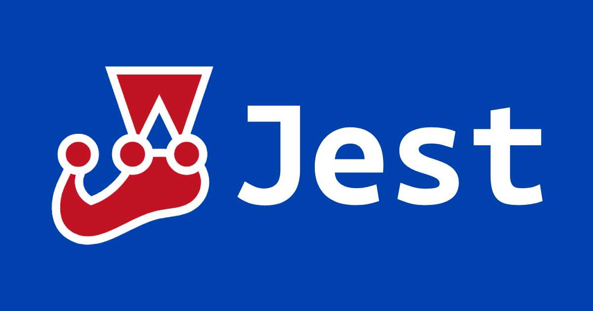

<!DOCTYPE html><html><head><meta charset="utf-8"><title>Jest：DOM 測試 (jQuery) | Titangene Blog</title><meta http-equiv="X-UA-Compatible" content="IE=edge"><meta name="viewport" content="width=device-width,initial-scale=1,maximum-scale=1"><meta name="HandheldFriendly" content="True"><meta name="apple-mobile-web-app-capable" content="yes"><meta name="author" content="Titangene"><link rel="shortcut icon" href="/favicon.ico"><link rel="alternate" href="/atom.xml" title="Titangene Blog"><meta name="description" content="若用 Jest 來測試直接操作 DOM 的程式碼，最大好處是不用安裝額外的套件就可以測試，因為 Jest 附帶了 jsdom，它是用來模擬 DOM 環境，讓你很像在瀏覽器上呼叫 DOM API，進而觀察 DOM 的操作是否符合預期，也就代表測畫面不用真的開啟瀏覽器，不用等待畫面渲染就可以進行測試。"><meta property="og:type" content="article"><meta property="og:title" content="Jest：DOM 測試 (jQuery)"><meta property="og:url" content="https://titangene.github.io/article/jest-jquery-dom-testing.html"><meta property="og:site_name" content="Titangene Blog"><meta property="og:description" content="若用 Jest 來測試直接操作 DOM 的程式碼，最大好處是不用安裝額外的套件就可以測試，因為 Jest 附帶了 jsdom，它是用來模擬 DOM 環境，讓你很像在瀏覽器上呼叫 DOM API，進而觀察 DOM 的操作是否符合預期，也就代表測畫面不用真的開啟瀏覽器，不用等待畫面渲染就可以進行測試。"><meta property="og:locale" content="zh_TW"><meta property="og:image" content="https://titangene.github.io/images/cover/jest.jpg"><meta property="article:published_time" content="2020-08-02T15:55:10.000Z"><meta property="article:modified_time" content="2020-08-02T15:54:34.300Z"><meta property="article:author" content="Titangene"><meta property="article:tag" content="w3HexSchool"><meta property="article:tag" content="Jest"><meta property="article:tag" content="JavaScript"><meta property="article:tag" content="Unit Testing"><meta property="article:tag" content="mock"><meta property="article:tag" content="DOM"><meta property="article:tag" content="jQuery"><meta name="twitter:card" content="summary_large_image"><meta name="twitter:image" content="https://titangene.github.io/images/cover/jest.jpg"><meta name="twitter:creator" content="@titangeneTW"><meta name="twitter:site" content="@titangene_blog"><meta property="fb:admins" content="100001106016019"><meta property="fb:app_id" content="2470546159839111"><meta property="og:image:width" content="1200"><meta property="og:image:height" content="630"><meta name="google-site-verification" content="AaJ39L7h-nWwJjXJMhAMtXSF6H6BUgGWXC80kYvLic8"><link href="https://fonts.googleapis.com/css2?family=Roboto&display=swap" rel="stylesheet"><link href="https://fonts.googleapis.com/css?family=Source+Code+Pro&display=swap" rel="stylesheet"><link rel="stylesheet" href="https://cdnjs.cloudflare.com/ajax/libs/font-awesome/5.13.0/css/all.min.css"><link rel="stylesheet" href="https://unpkg.com/gitalk/dist/gitalk.css"><link rel="stylesheet" href="/style.css"><script async src="https://www.googletagmanager.com/gtag/js?id=UA-129758206-1"></script><script>!function(a){function n(){dataLayer.push(arguments)}a.dataLayer=a.dataLayer||[],n("js",new Date),n("config","UA-129758206-1")}(window)</script><script>function setLoadingBarProgress(e){document.getElementById("loading-bar").style.width=e+"%"}</script><meta name="generator" content="Hexo 4.2.0"><link rel="alternate" href="/atom.xml" title="Titangene Blog" type="application/atom+xml"></head></html><body><div id="loading-bar-wrapper"><div id="loading-bar"></div></div><script>setLoadingBarProgress(20)</script><header class="l_header"><div class="wrapper"><div class="nav-main container container--flex"><a class="logo flat-box" href="/">Titangene Blog</a><div class="menu"><ul class="h-list"><li><a class="flat-box nav-home" href="/">Home</a></li><li><a class="flat-box nav-archives" href="/archives">Archives</a></li></ul><div class="underline"></div></div><div class="m_search"><form name="searchform" class="form u-search-form"><input type="text" class="input u-search-input" placeholder="Search"> <i class="fas fa-search"></i></form></div><ul class="switcher h-list"><li class="s-search"><a class="fas fa-search" href="javascript:void(0)"></a></li><li class="s-menu"><a class="fas fa-bars" href="javascript:void(0)"></a></li></ul></div><div class="nav-sub container container--flex"><a class="logo flat-box" href="/">Titangene Blog</a><ul class="switcher h-list"><li class="s-comment"><a class="far fa-comment-alt" href="javascript:void(0)"></a></li><li class="s-top"><a class="fas fa-arrow-up" href="javascript:void(0)"></a></li><li class="s-toc"><a class="fas fa-list-ol" href="javascript:void(0)"></a></li></ul></div></div></header><aside class="menu-phone"><nav><a href="/" class="nav-home nav">Home </a><a href="/archives" class="nav-archives nav">Archives</a></nav></aside><script>setLoadingBarProgress(40)</script><div class="l_body"><div class="container clearfix"><div class="l_main"><article id="post-jest-jquery-dom-testing" class="post white-box article-type-post" itemscope itemprop="blogPost"><section class="meta"><h2 class="title"><a href="/article/jest-jquery-dom-testing.html">Jest：DOM 測試 (jQuery)</a></h2><span class="post-time"><span class="post-meta-item-icon"><i class="fa fa-calendar"></i> </span><span class="post-meta-item-text">發表於</span> <time title="建立時間：2020-08-02 23:55:10" itemprop="dateCreated datePublished" datetime="2020-08-02T23:55:10+08:00">2020-08-02</time></span> <span class="comments-count"><span class="post-meta-divider">|</span> <span class="post-meta-item-icon"><i class="fas fa-comment"></i> </span><a href="https://titangene.github.io/article/jest-jquery-dom-testing.html#comments" class="article-comment-count">留言</a></span><div class="post-category"><span class="post-meta-item-icon"><i class="fa fa-folder"></i> </span><span class="post-meta-item-text">分類於</span> <span itemprop="about" itemscope itemtype="http://schema.org/Thing"><a href="/categories/testing/" itemprop="url" rel="index"><span itemprop="name">Testing</span></a></span></div></section><section class="toc-wrapper"><h3>目錄</h3><ol class="toc"><li class="toc-item toc-level-1"><a class="toc-link" href="#寫範例程式碼"><span class="toc-text">寫範例程式碼</span></a></li><li class="toc-item toc-level-1"><a class="toc-link" href="#建立測試"><span class="toc-text">建立測試</span></a></li></ol></section><section class="article typo"><div class="article-entry" itemprop="articleBody"><p></p><p>若用 Jest 來測試直接操作 DOM 的程式碼，最大好處是不用安裝額外的套件就可以測試，因為 Jest 附帶了 <code>jsdom</code>，它是用來模擬 DOM 環境，讓你很像在瀏覽器上呼叫 DOM API，進而觀察 DOM 的操作是否符合預期，也就代表測畫面不用真的開啟瀏覽器，不用等待畫面渲染就可以進行測試。</p><a id="more"></a><blockquote><p>其他 Jest 相關文章可參閱 <a href="https://titangene.github.io/tags/jest/">Jest 系列文章</a>。</p></blockquote><h1 id="寫範例程式碼"><a class="header-anchor" href="#寫範例程式碼"></a>寫範例程式碼</h1><p>本篇會用下面程式碼作為範例：</p><ul><li><code>fetchCurrentUser.js</code>：發送 request，並將收到的資料進行解析處理</li><li><code>displayUser.js</code>：在按鈕上註冊 <code>click</code> 事件，點擊按鈕後會發 API，並將資料顯示在畫面上</li></ul><figure class="highlight javascript"><table><tr><td class="gutter"><pre><span class="line">1</span><br><span class="line">2</span><br><span class="line">3</span><br><span class="line">4</span><br><span class="line">5</span><br><span class="line">6</span><br><span class="line">7</span><br><span class="line">8</span><br><span class="line">9</span><br><span class="line">10</span><br><span class="line">11</span><br><span class="line">12</span><br><span class="line">13</span><br><span class="line">14</span><br><span class="line">15</span><br><span class="line">16</span><br><span class="line">17</span><br><span class="line">18</span><br><span class="line">19</span><br></pre></td><td class="code"><pre><code class="hljs javascript"><span class="hljs-comment">// src/fetchCurrentUser.js</span><br><span class="hljs-keyword">const</span> $ = <span class="hljs-built_in">require</span>(<span class="hljs-string">'jquery'</span>);<br><br><span class="hljs-function"><span class="hljs-keyword">function</span> <span class="hljs-title">parseJSON</span>(<span class="hljs-params">user</span>) </span>&#123;<br>  <span class="hljs-keyword">return</span> &#123;<br>    fullName: user.firstName + <span class="hljs-string">' '</span> + user.lastName,<br>    loggedIn: <span class="hljs-literal">true</span>,<br>  &#125;;<br>&#125;<br><br><span class="hljs-function"><span class="hljs-keyword">function</span> <span class="hljs-title">fetchCurrentUser</span>(<span class="hljs-params">callback</span>) </span>&#123;<br>  <span class="hljs-keyword">return</span> $.ajax(&#123;<br>    success: <span class="hljs-function"><span class="hljs-params">user</span> =&gt;</span> callback(parseJSON(user)),<br>    type: <span class="hljs-string">'GET'</span>,<br>    url: <span class="hljs-string">'http://example.com/currentUser'</span>,<br>  &#125;);<br>&#125;<br><br><span class="hljs-built_in">module</span>.exports = fetchCurrentUser;<br></code></pre></td></tr></table></figure><figure class="highlight javascript"><table><tr><td class="gutter"><pre><span class="line">1</span><br><span class="line">2</span><br><span class="line">3</span><br><span class="line">4</span><br><span class="line">5</span><br><span class="line">6</span><br><span class="line">7</span><br><span class="line">8</span><br><span class="line">9</span><br><span class="line">10</span><br></pre></td><td class="code"><pre><code class="hljs javascript"><span class="hljs-comment">// src/displayUser.js</span><br><span class="hljs-keyword">const</span> $ = <span class="hljs-built_in">require</span>(<span class="hljs-string">'jquery'</span>);<br><span class="hljs-keyword">const</span> fetchCurrentUser = <span class="hljs-built_in">require</span>(<span class="hljs-string">'./fetchCurrentUser.js'</span>);<br><br>$(<span class="hljs-string">'#button'</span>).click(<span class="hljs-function"><span class="hljs-params">()</span> =&gt;</span> &#123;<br>  fetchCurrentUser(<span class="hljs-function"><span class="hljs-params">user</span> =&gt;</span> &#123;<br>    <span class="hljs-keyword">const</span> loggedText = <span class="hljs-string">'Logged '</span> + (user.loggedIn ? <span class="hljs-string">'In'</span> : <span class="hljs-string">'Out'</span>);<br>    $(<span class="hljs-string">'#username'</span>).text(user.fullName + <span class="hljs-string">' - '</span> + loggedText);<br>  &#125;);<br>&#125;);<br></code></pre></td></tr></table></figure><h1 id="建立測試"><a class="header-anchor" href="#建立測試"></a>建立測試</h1><p>被測試的函數在 <code>#button</code> DOM 元素上新增一個事件監聽器，所以需要設定 DOM 來進行測試。</p><p>Jest 附帶了 <code>jsdom</code>，它模擬一個 DOM 環境，很像瀏覽器，代表呼叫的每個 DOM API 都可像在瀏覽器中觀察的方式一樣。</p><p>mock <code>fetchCurrentUser.js</code> 可讓測試不用真的發出請求，可 reslove 成 local mock data，快速進行測試。</p><figure class="highlight javascript"><table><tr><td class="gutter"><pre><span class="line">1</span><br><span class="line">2</span><br><span class="line">3</span><br><span class="line">4</span><br><span class="line">5</span><br><span class="line">6</span><br><span class="line">7</span><br><span class="line">8</span><br><span class="line">9</span><br><span class="line">10</span><br><span class="line">11</span><br><span class="line">12</span><br><span class="line">13</span><br><span class="line">14</span><br><span class="line">15</span><br><span class="line">16</span><br><span class="line">17</span><br><span class="line">18</span><br><span class="line">19</span><br><span class="line">20</span><br><span class="line">21</span><br><span class="line">22</span><br><span class="line">23</span><br><span class="line">24</span><br><span class="line">25</span><br><span class="line">26</span><br><span class="line">27</span><br><span class="line">28</span><br><span class="line">29</span><br><span class="line">30</span><br><span class="line">31</span><br><span class="line">32</span><br><span class="line">33</span><br><span class="line">34</span><br><span class="line">35</span><br><span class="line">36</span><br><span class="line">37</span><br></pre></td><td class="code"><pre><code class="hljs javascript"><span class="hljs-comment">// __tests__/displayUser.test.js</span><br>jest.mock(<span class="hljs-string">'../src/fetchCurrentUser'</span>);<br><br>it(<span class="hljs-string">'點擊按鈕後顯示使用者已登入'</span>, () =&gt; &#123;<br>  <span class="hljs-comment">// 設定 document body</span><br>  <span class="hljs-built_in">document</span>.body.innerHTML = <span class="hljs-string">`</span><br><span class="hljs-string">    &lt;span id="username"&gt;&lt;/span&gt;</span><br><span class="hljs-string">    &lt;button id="button"&gt;&lt;/button&gt;`</span>;<br><br>  <span class="hljs-comment">// 此 module 有 side-effect</span><br>  <span class="hljs-built_in">require</span>(<span class="hljs-string">'../src/displayUser'</span>);<br><br>  <span class="hljs-keyword">const</span> $ = <span class="hljs-built_in">require</span>(<span class="hljs-string">'jquery'</span>);<br>  <span class="hljs-keyword">const</span> fetchCurrentUser = <span class="hljs-built_in">require</span>(<span class="hljs-string">'../src/fetchCurrentUser'</span>);<br><br>  <span class="hljs-comment">// 告訴 fetchCurrentUser mock 函數自動使用一些資料來 invoke callback</span><br>  fetchCurrentUser.mockImplementation(<span class="hljs-function"><span class="hljs-params">callback</span> =&gt;</span> &#123;<br>    callback(&#123;<br>      fullName: <span class="hljs-string">'Titan'</span>,<br>      loggedIn: <span class="hljs-literal">true</span>,<br>    &#125;);<br>  &#125;);<br><br>  <span class="hljs-comment">// 點擊前的 DOM</span><br>  <span class="hljs-built_in">console</span>.log(<span class="hljs-built_in">document</span>.body.innerHTML);<br><br>  <span class="hljs-comment">// 使用 jQuery 模擬點擊按鈕</span><br>  $(<span class="hljs-string">'#button'</span>).click();<br><br>  <span class="hljs-comment">// 點擊後的 DOM</span><br>  <span class="hljs-built_in">console</span>.log(<span class="hljs-built_in">document</span>.body.innerHTML);<br><br>  <span class="hljs-comment">// Assert fetchCurrentUser 函數已被呼叫，</span><br>  <span class="hljs-comment">// 且 span#username 的 inner text 已按預期更新了</span><br>  expect(fetchCurrentUser).toBeCalled();<br>  expect($(<span class="hljs-string">'#username'</span>).text()).toEqual(<span class="hljs-string">'Titan - Logged In'</span>);<br>&#125;);<br></code></pre></td></tr></table></figure><p>下面測試為何要用 <code>$.ajax.mock.calls[0][0].success()</code> 的方式測，而不是直接 mock <code>src/fetchCurrentUser.js</code> 檔案內的 <code>parseJSON</code>？</p><p>因為 <code>src/fetchCurrentUser.js</code> 檔案內的 <code>parseJSON</code> 沒有 export，所以不能 mock，而且 mock 就失去測試的意義了，該測試就是為了確定 <code>$.ajax</code> 發出請求拿到的使用者資料透過 <code>parseJSON</code> 處理後是否會得到正確的資料 (API 會回傳使用者的 <code>firstName</code> 和 <code>lastName</code>，而 <code>parseJSON</code> 是負責把名字組合成 <code>fullName</code> 和是否登入的狀態 <code>loggedIn</code> )。</p><div class="info"><p>註：Jest 官方文件提供的 <a href="https://github.com/facebook/jest/tree/master/examples/jquery/" target="_blank" rel="noopener">examples/jquery</a> 範例內原本沒有以下內容，因視需求而修改的：</p><ul><li>為了讓將 mock 過的 <code>$.ajax()</code> 在每個測試執行前都被清乾淨 (不保留前一個測試使用個的痕跡)，所以需要在 <code>beforeEach()</code> 內加上 <code>$.ajax.mockClear()</code></li><li>原本範例內的每個測試都 require 了 <code>jquery</code> 和 <code>fetchCurrentUser.js</code>，為了簡化測試檔，把這些 require 統一放在測試檔的最上面</li><li>可用與 <code>expect(callback.mock.calls[0][0]).toEqual()</code> 行為一致的 <code>expect(callback).toBeCalledWith()</code> 但更簡潔的</li></ul></div><figure class="highlight javascript"><table><tr><td class="gutter"><pre><span class="line">1</span><br><span class="line">2</span><br><span class="line">3</span><br><span class="line">4</span><br><span class="line">5</span><br><span class="line">6</span><br><span class="line">7</span><br><span class="line">8</span><br><span class="line">9</span><br><span class="line">10</span><br><span class="line">11</span><br><span class="line">12</span><br><span class="line">13</span><br><span class="line">14</span><br><span class="line">15</span><br><span class="line">16</span><br><span class="line">17</span><br><span class="line">18</span><br><span class="line">19</span><br><span class="line">20</span><br><span class="line">21</span><br><span class="line">22</span><br><span class="line">23</span><br><span class="line">24</span><br><span class="line">25</span><br><span class="line">26</span><br><span class="line">27</span><br><span class="line">28</span><br><span class="line">29</span><br><span class="line">30</span><br><span class="line">31</span><br><span class="line">32</span><br><span class="line">33</span><br><span class="line">34</span><br><span class="line">35</span><br><span class="line">36</span><br><span class="line">37</span><br><span class="line">38</span><br><span class="line">39</span><br><span class="line">40</span><br><span class="line">41</span><br><span class="line">42</span><br><span class="line">43</span><br><span class="line">44</span><br><span class="line">45</span><br><span class="line">46</span><br><span class="line">47</span><br><span class="line">48</span><br></pre></td><td class="code"><pre><code class="hljs javascript"><span class="hljs-comment">// __tests__/fetchCurrentUser.test.js</span><br><span class="hljs-keyword">import</span> $ <span class="hljs-keyword">from</span> <span class="hljs-string">'jquery'</span>;<br><span class="hljs-keyword">const</span> fetchCurrentUser = <span class="hljs-built_in">require</span>(<span class="hljs-string">'../src/fetchCurrentUser'</span>);<br><br>jest.mock(<span class="hljs-string">'jquery'</span>);<br><br>beforeEach(<span class="hljs-function"><span class="hljs-params">()</span> =&gt;</span> &#123;<br>  jest.resetModules();<br>  $.ajax.mockClear();<br>&#125;);<br><br>it(<span class="hljs-string">'用正確的參數呼叫 $.ajax'</span>, () =&gt; &#123;<br>  <span class="hljs-comment">// 呼叫要測試的函數</span><br>  <span class="hljs-keyword">const</span> dummyCallback = <span class="hljs-function"><span class="hljs-params">()</span> =&gt;</span> &#123;&#125;;<br>  fetchCurrentUser(dummyCallback);<br><br>  <span class="hljs-comment">// 確保在前兩行有正確的呼叫 $.ajax</span><br>  <span class="hljs-comment">// 不在意 $.ajax 的請求結果，只驗證呼叫 $.ajax 時傳的參數是否正確</span><br>  expect($.ajax).toBeCalledWith(&#123;<br>    success: expect.any(<span class="hljs-built_in">Function</span>),<br>    type: <span class="hljs-string">'GET'</span>,<br>    url: <span class="hljs-string">'http://example.com/currentUser'</span>,<br>  &#125;);<br>&#125;);<br><br>it(<span class="hljs-string">'$.ajax 請求完成後呼叫 callback'</span>, () =&gt; &#123;<br>  <span class="hljs-comment">// 為 callback 建立一個 mock function</span><br>  <span class="hljs-keyword">const</span> callback = jest.fn();<br>  fetchCurrentUser(callback);<br><br>  <span class="hljs-comment">// 模擬 `$.ajax` 執行自己的 callback</span><br>  <span class="hljs-comment">// 第一次呼叫的第一個參數</span><br>  $.ajax.mock.calls[<span class="hljs-number">0</span>][<span class="hljs-number">0</span>].success(&#123;<br>    firstName: <span class="hljs-string">'Bobby'</span>,<br>    lastName: <span class="hljs-string">'Marley'</span>,<br>  &#125;);<br><br>  <span class="hljs-comment">// assert 模擬 `$.ajax` 呼叫的 callback 傳入的 arg</span><br>  <span class="hljs-comment">// 第一次呼叫的第一個參數</span><br>  expect(callback.mock.calls[<span class="hljs-number">0</span>][<span class="hljs-number">0</span>]).toEqual(&#123;<br>    fullName: <span class="hljs-string">'Bobby Marley'</span>,<br>    loggedIn: <span class="hljs-literal">true</span>,<br>  &#125;);<br>  expect(callback).toBeCalledWith(&#123;<br>    fullName: <span class="hljs-string">'Bobby Marley'</span>,<br>    loggedIn: <span class="hljs-literal">true</span>,<br>  &#125;);<br>&#125;);<br></code></pre></td></tr></table></figure><p>在 <code>fetchCurrentUser.test.js</code> 測試檔內我自己加了一個測試，用來測使用者點擊按鈕後是否正確的呼叫 <code>fetchCurrentUser()</code>，並且裡面呼叫的 <code>$.ajax()</code> 是否有正確的呼叫 <code>success</code> 內的 <code>callback</code> (即 <code>success: user =&gt; callback(parseJSON(user))</code> )。</p><p>但為了不讓 <code>$.ajax()</code> 發出真的請求，所以用 <code>$.ajax = jest.fn()</code> mock，接著再透過 <code>$.ajax.mock.calls[0][0].success({...})</code> 的方式呼叫 <code>success</code> 內的 <code>callback</code>。</p><p>不過，這個測試比較複雜，因為測試檔的最上面使用了 <code>jest.mock('jquery')</code>，讓整個測試檔都 mock 了 jQuery，但在 <code>require('../src/displayUser')</code> 要綁定按鈕點擊事件時需要用真的 jQuery，所以才需要用 <code>jest.unmock('jquery')</code> unmock jQuery。</p><p>除了綁定按鈕點擊事件要用真的 jQuery，觸發點擊事件後顯示使用者已登入的 <code>$('#username').text()</code> 也要用真的 jQuery (因本測試會用 <code>span#username</code> 的 <code>innerText</code> 來驗證測試)。</p><figure class="highlight javascript"><table><tr><td class="gutter"><pre><span class="line">1</span><br><span class="line">2</span><br><span class="line">3</span><br><span class="line">4</span><br><span class="line">5</span><br><span class="line">6</span><br><span class="line">7</span><br><span class="line">8</span><br><span class="line">9</span><br><span class="line">10</span><br><span class="line">11</span><br><span class="line">12</span><br><span class="line">13</span><br><span class="line">14</span><br><span class="line">15</span><br><span class="line">16</span><br><span class="line">17</span><br><span class="line">18</span><br><span class="line">19</span><br><span class="line">20</span><br><span class="line">21</span><br><span class="line">22</span><br><span class="line">23</span><br><span class="line">24</span><br><span class="line">25</span><br><span class="line">26</span><br><span class="line">27</span><br><span class="line">28</span><br><span class="line">29</span><br><span class="line">30</span><br><span class="line">31</span><br><span class="line">32</span><br><span class="line">33</span><br><span class="line">34</span><br><span class="line">35</span><br><span class="line">36</span><br><span class="line">37</span><br><span class="line">38</span><br><span class="line">39</span><br><span class="line">40</span><br><span class="line">41</span><br><span class="line">42</span><br><span class="line">43</span><br></pre></td><td class="code"><pre><code class="hljs javascript"><span class="hljs-comment">// __tests__/fetchCurrentUser.test.js</span><br><span class="hljs-keyword">import</span> $ <span class="hljs-keyword">from</span> <span class="hljs-string">'jquery'</span>;<br><span class="hljs-keyword">const</span> fetchCurrentUser = <span class="hljs-built_in">require</span>(<span class="hljs-string">'../src/fetchCurrentUser'</span>);<br><br>jest.mock(<span class="hljs-string">'jquery'</span>);<br><br>beforeEach(<span class="hljs-function"><span class="hljs-params">()</span> =&gt;</span> &#123;<br>  jest.resetModules();<br>  $.ajax.mockClear();<br>&#125;);<br><br>it(<span class="hljs-string">'點擊按鈕發出 $.ajax 請求，請求完成後顯示使用者已登入'</span>, () =&gt; &#123;<br>  <span class="hljs-comment">// 設定 document body</span><br>  <span class="hljs-built_in">document</span>.body.innerHTML = <span class="hljs-string">`</span><br><span class="hljs-string">    &lt;span id="username"&gt;&lt;/span&gt;</span><br><span class="hljs-string">    &lt;button id="button"&gt;&lt;/button&gt;`</span>;<br><br>  <span class="hljs-comment">// 使用 `jest.unmock(...)` 後，require 的模組都會是真的，不是 mock 的</span><br>  <span class="hljs-comment">// 因測試檔的最上面 mock 了 jQuery，而 `displayUser.js` 內</span><br>  <span class="hljs-comment">// 需要跑真的 jQuery，所以需要 unmock jQuery，</span><br>  jest.unmock(<span class="hljs-string">'jquery'</span>);<br><br>  <span class="hljs-comment">// 此 module 有 side-effect</span><br>  <span class="hljs-built_in">require</span>(<span class="hljs-string">'../src/displayUser'</span>);<br><br>  <span class="hljs-comment">// 觸發點擊事件內要執行真的 `$(...).text()`，所以需要真的 jQuery</span><br>  <span class="hljs-keyword">const</span> $ = <span class="hljs-built_in">require</span>(<span class="hljs-string">'jquery'</span>);<br><br>  <span class="hljs-comment">// 但只有 `$.ajax` 需要 mock</span><br>  $.ajax = jest.fn();<br>  <span class="hljs-comment">// 模擬點擊按鈕</span><br>  <span class="hljs-built_in">document</span>.querySelector(<span class="hljs-string">'button'</span>).click();<br><br>  <span class="hljs-comment">// 模擬 `$.ajax` 執行自己的 callback</span><br>  <span class="hljs-comment">// 第一次呼叫的第一個參數</span><br>  $.ajax.mock.calls[<span class="hljs-number">0</span>][<span class="hljs-number">0</span>].success(&#123;<br>    firstName: <span class="hljs-string">'Bobby'</span>,<br>    lastName: <span class="hljs-string">'Marley'</span>,<br>  &#125;);<br><br>  <span class="hljs-comment">// Assert span#username 的 inner text 已按預期更新了 (畫面顯示使用者已登入)</span><br>  expect($(<span class="hljs-string">'#username'</span>).text()).toEqual(<span class="hljs-string">'Bobby Marley - Logged In'</span>);<br>&#125;);<br></code></pre></td></tr></table></figure><p>資料來源：</p><ul><li><a href="https://jestjs.io/docs/en/tutorial-jquery" target="_blank" rel="noopener">DOM Manipulation · Jest</a></li></ul></div><div class="article-tags tags"><a href="/tags/w3hexschool/" title="w3HexSchool">w3HexSchool</a> <a href="/tags/jest/" title="Jest">Jest</a> <a href="/tags/javascript/" title="JavaScript">JavaScript</a> <a href="/tags/unit-testing/" title="Unit Testing">Unit Testing</a> <a href="/tags/mock/" title="mock">mock</a> <a href="/tags/dom/" title="DOM">DOM</a> <a href="/tags/jquery/" title="jQuery">jQuery</a></div></section><div class="article-share-links"><span>分享：</span> <a class="fab fa-facebook-f" title="Facebook" target="_blank" href="javascript:window.open('https://www.facebook.com/sharer.php?u=https%3A%2F%2Ftitangene.github.io%2Farticle%2Fjest-jquery-dom-testing.html', 'Share on Facebook','width=600, height=600')"></a> <a class="fab fa-twitter" title="Twitter" target="_blank" href="javascript:window.open('https://twitter.com/share?url=https%3A%2F%2Ftitangene.github.io%2Farticle%2Fjest-jquery-dom-testing.html&amp;text=Jest：DOM 測試 (jQuery)&amp;hashtags=w3HexSchool,Jest,JavaScript,UnitTesting,mock,DOM,jQuery&amp;via=titangene_blog', 'Share on Twitter','width=600, height=260')"></a> <a class="fab fa-linkedin-in" title="Linkedin" target="_blank" href="javascript:window.open('https://www.linkedin.com/shareArticle?mini=true&amp;url=https%3A%2F%2Ftitangene.github.io%2Farticle%2Fjest-jquery-dom-testing.html&amp;title=Jest：DOM 測試 (jQuery)', 'Share on Linkedin','width=600, height=600')"></a> <a class="fab fa-facebook-messenger" title="Facebook Messenger" target="_blank" href="javascript:window.open('http://www.facebook.com/dialog/send?app_id=2470546159839111&amp;link=https%3A%2F%2Ftitangene.github.io%2Farticle%2Fjest-jquery-dom-testing.html&amp;display=popup&amp;redirect_uri=https%3A%2F%2Fwww.facebook.com%2Fdialog%2Freturn%2Fclose%23_%3D_', 'Send in Messenger','width=600, height=600')"></a> <a class="fab fa-telegram-plane" href="https://telegram.me/share/url?url=https%3A%2F%2Ftitangene.github.io%2Farticle%2Fjest-jquery-dom-testing.html&text=Jest：DOM 測試 (jQuery)" target="_blank"></a></div><nav id="article-nav"><a href="/article/jest-manual-mocks.html" id="article-nav-prev" class="article-nav-link-wrap" title="Jest：Manual Mocks" rel="prev"><strong class="article-nav-caption">Prev</strong><p class="article-nav-title">Jest：Manual Mocks</p><i class="fas fa-angle-left"></i> </a><a href="/article/recommend-chrome-extension-1.html" id="article-nav-next" class="article-nav-link-wrap" title="推薦 Chrome Extension：Markdown &amp; 頁面主題篇" rel="next"><strong class="article-nav-caption">Next</strong><p class="article-nav-title">推薦 Chrome Extension：Markdown &amp; 頁面主題篇</p><i class="fas fa-angle-right"></i></a></nav><section id="list_related_posts"><h2>相關文章</h2><ul class="related-posts"><li class="related-posts-item"><a class="related-posts-link" href="/article/jest-manual-mocks.html">Jest：Manual Mocks</a><div class="related-posts-item-abstract">manual mock 是用於透過 mock 資料來對功能進行 stub out。例如：若你不想存取網站或 DB 之類的遠端資源，可能需要使用 fake data 來 manual mock 這些功能，以確保可以快速測試</div></li><li class="related-posts-item"><a class="related-posts-link" href="/article/jest-timer-mocks.html">Jest：Timer Mocks</a><div class="related-posts-item-abstract">常用的 native timer 包括 setTimeout、setInterval、clearTimeout、clearInterval 等，用到這些 timer 的函數可以說是依賴於真實流逝的時間。如果 timer</div></li><li class="related-posts-item"><a class="related-posts-link" href="/article/jest-mock-function.html">Jest：Mock 函數</a><div class="related-posts-item-abstract">Jest 提供的 mock 函數可讓你自行決定要 mock 到什麼程度，並且可讓你在呼叫該 mock 函數之後，捕捉呼叫的次數、傳入的參數、使用 new 實例化的 instance，以及你指定要回傳的值，我們可透過這些資</div></li><li class="related-posts-item"><a class="related-posts-link" href="/article/jest-async-test.html">Jest：非同步測試</a><div class="related-posts-item-abstract">處理 JS 非同步的常見作法包括 callback、ES6 的 Promise 以及 ES7 的 async 和 await，而本篇會分別說明如何在 Jest 使用這些 JS 特性來測試非同步程式碼。其他 Jest 相關</div></li><li class="related-posts-item"><a class="related-posts-link" href="/article/jest-describe-test-case.html">Jest：Describe & Test case</a><div class="related-posts-item-abstract">上次介紹了 Jest 提供的 matcher，可讓你驗證程式碼是否符合預期，而這次來說明如何透過 describe 和 test 區塊來組織測試案例。當需求變多時，可針對需求來分類測試案例，將相關的測試放在同一個群組區塊</div></li><li class="related-posts-item"><a class="related-posts-link" href="/article/jest-snapshot-testing.html">Jest：Snapshot 測試</a><div class="related-posts-item-abstract">若想確保 UI 不會因意外修改而產生 bug，snapshot 測試就是一個很好用的工具。其他 Jest 相關文章可參閱 Jest 系列文章。使用 Jest 進行 snapshot 測試如果想測試一個 UI 元件，要測的</div></li></ul></section><section class="comments" id="comments"><h2>討論區</h2><div id="gitalk-container"></div></section></article><script>window.subData={title:"Jest：DOM 測試 (jQuery)",tools:!0}</script></div><aside class="l_side"><section class="m_widget about"><div class="avatar-section"><style>.avatar-cover{background:url(/images/avatar_cover.jpg) 0 10%/cover no-repeat}</style><div class="avatar-cover"></div></div><div class="header">Titangene</div><div class="content"><div class="desc">利用 blog 紀錄學習歷程</div></div><div class="content"><meta itemprop="url" content="https://titangene.github.io"><div class="social-wrapper"><a itemprop="sameAs" href="https://github.com/titangene" class="social github" target="_blank" rel="external"><span class="fab fa-github-alt"></span> </a><a itemprop="sameAs" href="https://www.facebook.com/titangene.tw" class="social facebook" target="_blank" rel="external"><span class="fab fa-facebook-square"></span> </a><a itemprop="sameAs" href="https://www.instagram.com/titangene/" class="social instagram" target="_blank" rel="external"><span class="fab fa-instagram"></span> </a><a itemprop="sameAs" href="https://www.flickr.com/photos/titangene" class="social flickr" target="_blank" rel="external"><span class="fab fa-flickr"></span> </a><a itemprop="sameAs" href="/atom.xml" class="social rss" target="_blank" rel="external"><span class="fas fa-rss"></span></a></div></div></section><section class="m_widget facebook_page"><div class="fb-page" data-href="https://www.facebook.com/titangene.blog/" data-width="250" data-small-header="false" data-adapt-container-width="false" data-hide-cover="false" data-show-facepile="true"><blockquote cite="https://www.facebook.com/titangene.blog/" class="fb-xfbml-parse-ignore"><p><a href="https://www.facebook.com/titangene.blog/" class="social facebook" target="_blank"><span class="fab fa-facebook-square"></span></a></p><p><a href="https://www.facebook.com/titangene.blog/" target="_blank" rel="noopener">Titangene Blog</a></p><p>Loading...</p></blockquote></div></section><section class="m_widget recent"><div class="header">Recents</div><div class="content"><ul class="entry"><li><a itemprop="url" class="flat-box" href="/article/recommend-chrome-extension-4.html"><time>2020-08-30</time><div class="name">推薦 Chrome Extension：翻譯篇 - 新同文堂</div></a></li><li><a itemprop="url" class="flat-box" href="/article/recommend-chrome-extension-3.html"><time>2020-08-23</time><div class="name">推薦 Chrome Extension：YouTube 篇</div></a></li><li><a itemprop="url" class="flat-box" href="/article/recommend-chrome-extension-2.html"><time>2020-08-16</time><div class="name">推薦 Chrome Extension：新分頁篇</div></a></li><li><a itemprop="url" class="flat-box" href="/article/recommend-chrome-extension-1.html"><time>2020-08-09</time><div class="name">推薦 Chrome Extension：Markdown &amp; 頁面主題篇</div></a></li><li><a itemprop="url" class="flat-box" href="/article/jest-jquery-dom-testing.html"><time>2020-08-02</time><div class="name">Jest：DOM 測試 (jQuery)</div></a></li><li><a itemprop="url" class="flat-box" href="/article/jest-manual-mocks.html"><time>2020-07-26</time><div class="name">Jest：Manual Mocks</div></a></li><li><a itemprop="url" class="flat-box" href="/article/jest-timer-mocks.html"><time>2020-07-19</time><div class="name">Jest：Timer Mocks</div></a></li></ul></div></section></aside><script>setLoadingBarProgress(60)</script></div></div><footer id="footer" class="clearfix"><div class="social-wrapper"><a href="https://github.com/titangene" class="social github" target="_blank" rel="external"><span class="fab fa-github-alt"></span> </a><a href="https://www.facebook.com/titangene.tw" class="social facebook" target="_blank" rel="external"><span class="fab fa-facebook-square"></span> </a><a href="https://www.instagram.com/titangene/" class="social instagram" target="_blank" rel="external"><span class="fab fa-instagram"></span> </a><a href="https://www.flickr.com/photos/titangene" class="social flickr" target="_blank" rel="external"><span class="fab fa-flickr"></span> </a><a href="/atom.xml" class="social rss" target="_blank" rel="external"><span class="fas fa-rss"></span></a></div><div>© 2018 - 2020 <span itemprop="copyrightHolder">Titangene</span></div><div>Powered by <a href="https://hexo.io/" target="_blank" class="codename" rel="external noopener">Hexo</a> - Theme <a href="https://github.com/stkevintan/hexo-theme-material-flow" target="_blank" class="codename" rel="external noopener">MaterialFlow</a></div><div><a rel="license noopener" href="http://creativecommons.org/licenses/by-nc-sa/4.0/" target="_blank" rel="external noopener"></a></div></footer><script>setLoadingBarProgress(80)</script><script src="//cdnjs.cloudflare.com/ajax/libs/jquery/2.1.4/jquery.min.js"></script><script src="https://cdnjs.cloudflare.com/ajax/libs/clipboard.js/2.0.0/clipboard.min.js"></script><script src="https://unpkg.com/gitalk/dist/gitalk.min.js"></script><script src="/js/jquery.fitvids.js"></script><script>var SEARCH_SERVICE="hexo",ROOT="/";ROOT.endsWith("/")||(ROOT+="/")</script><script src="/js/search.js"></script><script src="/js/app.js"></script><script src="/js/clipboard-use.js"></script><script type="text/javascript">var gitalk=new Gitalk({clientID:"dd1684f31ee17e25c22b",clientSecret:"4b51bb4a5996b04d58821a6e3da8558f23da4cdf",id:window.location.pathname,repo:"hexo-blog",owner:"titangene",admin:"titangene",distractionFreeMode:"true"});gitalk.render("gitalk-container")</script><div id="fb-root"></div><script>window.fbAsyncInit=function(){FB.init({appId:"2470546159839111",autoLogAppEvents:!0,xfbml:!0,version:"v2.11"}),FB.AppEvents.logPageView()},function(e,n,t){var o,s=e.getElementsByTagName(n)[0];e.getElementById(t)||((o=e.createElement(n)).id=t,o.src="//connect.facebook.net/zh_TW/sdk.js",s.parentNode.insertBefore(o,s))}(document,"script","facebook-jssdk")</script><script>setLoadingBarProgress(100)</script></body>